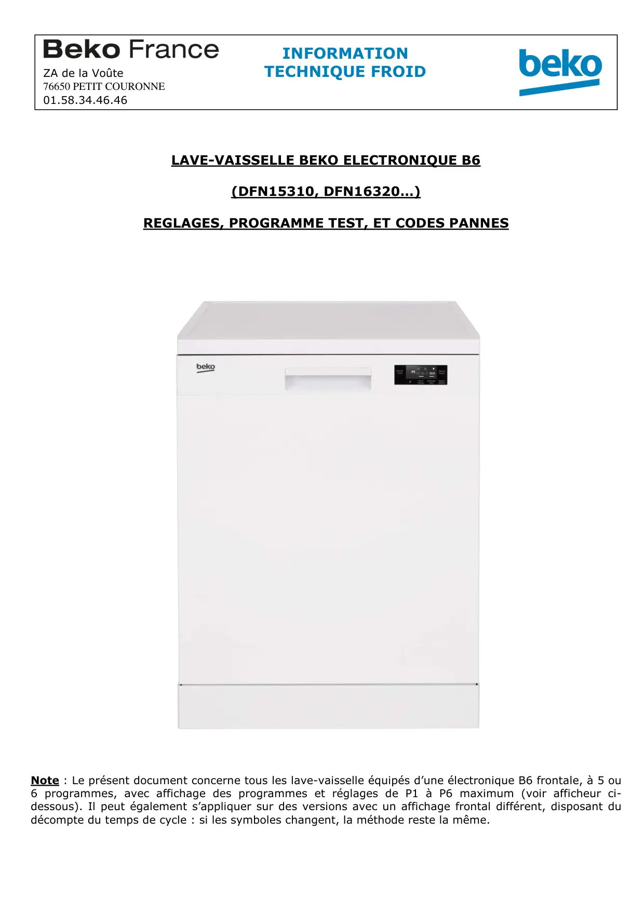
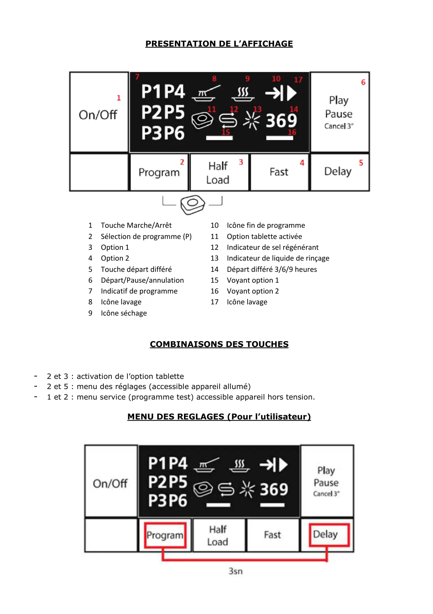
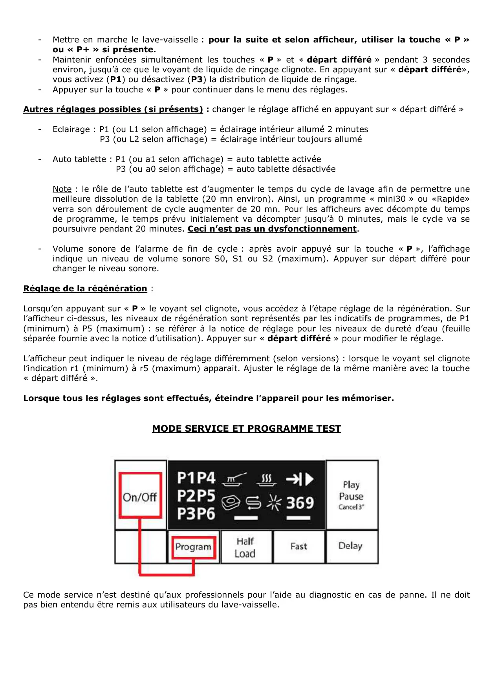
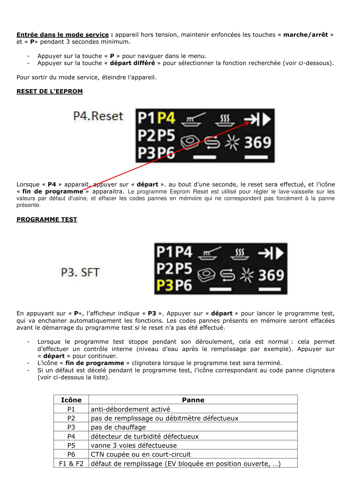
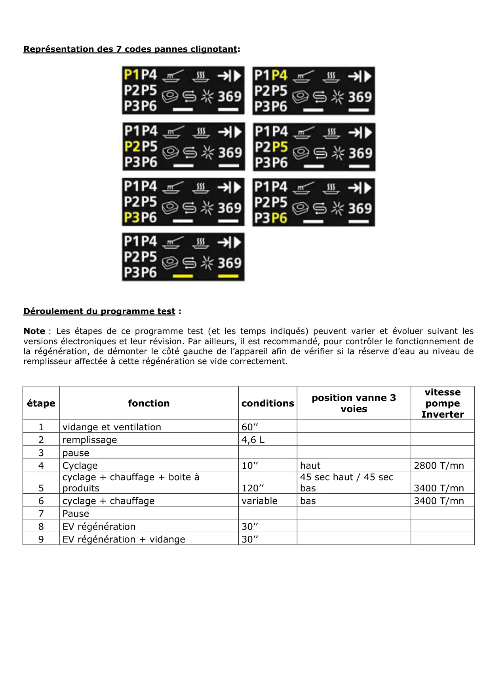

Progr.Test Réglages lave vaisselle B6

LAVE-VAISSELLE BEKO ELECTRONIQUE B6(DFN15310, DFN16320…)REGLAGES, PROGRAMME TEST, ET CODES PANNESNote : Le présent document concerne tous les lave-vaisselle équipés d’une électronique B6 frontale, à 5 ou6 programmes, avec affichage des programmes et réglages de P1 à P6 maximum (voir afficheur ci-dessous). Il peut également s’appliquer sur des versions avec un affichage frontal différent, disposant dudécompte du temps de cycle : si les symboles changent, la méthode reste la même.INFORMATIONZA de la Voûte TECHNIQUE FROID76650 PETIT COURONNE01.58.34.46.46
1 / 5
PRESENTATION DE L’AFFICHAGE1Touche Marche/Arrêt10Icône fin de programme2Sélection de programme (P)11Option tablette activée3Option 112Indicateur de sel régénérant4Option 213Indicateur de liquide de rinçage5Touche départ différé14Départ différé 3/6/9 heures6Départ/Pause/annulation15Voyant option 17Indicatif de programme16Voyant option 28Icône lavage17Icône lavage9Icône séchageCOMBINAISONS DES TOUCHES-2 et 3 : activation de l’option tablette-2 et 5 : menu des réglages (accessible appareil allumé)-1 et 2 : menu service (programme test) accessible appareil hors tension.MENU DES REGLAGES (Pour l’utilisateur)
2 / 5
-Mettre en marche le lave-vaisselle : pour la suite et selon afficheur, utiliser la touche « P »ou « P+ » si présente.-Maintenir enfoncées simultanément les touches « P » et « départ différé » pendant 3 secondesenviron, jusqu’à ce que le voyant de liquide de rinçage clignote. En appuyant sur « départ différé»,vous activez (P1) ou désactivez (P3) la distribution de liquide de rinçage.-Appuyer sur la touche « P » pour continuer dans le menu des réglages.Autres réglages possibles (si présents) : changer le réglage affiché en appuyant sur « départ différé »-Eclairage : P1 (ou L1 selon affichage) = éclairage intérieur allumé 2 minutesP3 (ou L2 selon affichage) = éclairage intérieur toujours allumé-Auto tablette : P1 (ou a1 selon affichage) = auto tablette activéeP3 (ou a0 selon affichage) = auto tablette désactivéeNote : le rôle de l’auto tablette est d’augmenter le temps du cycle de lavage afin de permettre unemeilleure dissolution de la tablette (20 mn environ). Ainsi, un programme « mini30 » ou «Rapide»verra son déroulement de cycle augmenter de 20 mn. Pour les afficheurs avec décompte du tempsde programme, le temps prévu initialement va décompter jusqu’à 0 minutes, mais le cycle va sepoursuivre pendant 20 minutes. Ceci n’est pas un dysfonctionnement.-Volume sonore de l’alarme de fin de cycle : après avoir appuyé sur la touche « P », l’affichageindique un niveau de volume sonore S0, S1 ou S2 (maximum). Appuyer sur départ différé pourchanger le niveau sonore.Réglage de la régénération :Lorsqu’en appuyant sur « P » le voyant sel clignote, vous accédez à l’étape réglage de la régénération. Surl’afficheur ci-dessus, les niveaux de régénération sont représentés par les indicatifs de programmes, de P1(minimum) à P5 (maximum) : se référer à la notice de réglage pour les niveaux de dureté d’eau (feuilleséparée fournie avec la notice d’utilisation). Appuyer sur « départ différé » pour modifier le réglage.L’afficheur peut indiquer le niveau de réglage différemment (selon versions) : lorsque le voyant sel clignotel’indication r1 (minimum) à r5 (maximum) apparait. Ajuster le réglage de la même manière avec la touche« départ différé ».Lorsque tous les réglages sont effectués, éteindre l’appareil pour les mémoriser.MODE SERVICE ET PROGRAMME TESTCe mode service n’est destiné qu’aux professionnels pour l’aide au diagnostic en cas de panne. Il ne doitpas bien entendu être remis aux utilisateurs du lave-vaisselle.
3 / 5
Entrée dans le mode service : appareil hors tension, maintenir enfoncées les touches « marche/arrêt »et « P» pendant 3 secondes minimum.-Appuyer sur la touche « P » pour naviguer dans le menu.-Appuyer sur la touche « départ différé » pour sélectionner la fonction recherchée (voir ci-dessous).Pour sortir du mode service, éteindre l’appareil.RESET DE L’EEPROMLorsque « P4 » apparait, appuyer sur « départ ». au bout d’une seconde, le reset sera effectué, et l’icône« fin de programme » apparaitra. Le programme Eeprom Reset est utilisé pour régler le lave-vaisselle sur lesvaleurs par défaut d'usine, et effacer les codes pannes en mémoire qui ne correspondent pas forcément à la panneprésente.PROGRAMME TESTEn appuyant sur « P», l’afficheur indique « P3 ». Appuyer sur « départ » pour lancer le programme test,qui va enchainer automatiquement les fonctions. Les codes pannes présents en mémoire seront effacéesavant le démarrage du programme test si le reset n’a pas été effectué.-Lorsque le programme test stoppe pendant son déroulement, cela est normal : cela permetd’effectuer un contrôle interne (niveau d’eau après le remplissage par exemple). Appuyer sur« départ » pour continuer.-L’icône « fin de programme » clignotera lorsque le programme test sera terminé.-Si un défaut est décelé pendant le programme test, l’icône correspondant au code panne clignotera(voir ci-dessous la liste).IcônePanneP1anti-débordement activéP2pas de remplissage ou débitmètre défectueuxP3pas de chauffageP4détecteur de turbidité défectueuxP5vanne 3 voies défectueuseP6CTN coupée ou en court-circuitF1 & F2 défaut de remplissage (EV bloquée en position ouverte, …)
4 / 5
Représentation des 7 codes pannes clignotant:Déroulement du programme test :Note : Les étapes de ce programme test (et les temps indiqués) peuvent varier et évoluer suivant lesversions électroniques et leur révision. Par ailleurs, il est recommandé, pour contrôler le fonctionnement dela régénération, de démonter le côté gauche de l’appareil afin de vérifier si la réserve d’eau au niveau deremplisseur affectée à cette régénération se vide correctement.étapefonctionconditionsposition vanne 3voiesvitessepompeInverter1vidange et ventilation60’’2remplissage4,6 L3pause4Cyclage10’’haut2800 T/mn5cyclage + chauffage + boite àproduits120’’45 sec haut / 45 secbas3400 T/mn6cyclage + chauffagevariablebas3400 T/mn7Pause8EV régénération30’’9EV régénération + vidange30’’
5 / 5